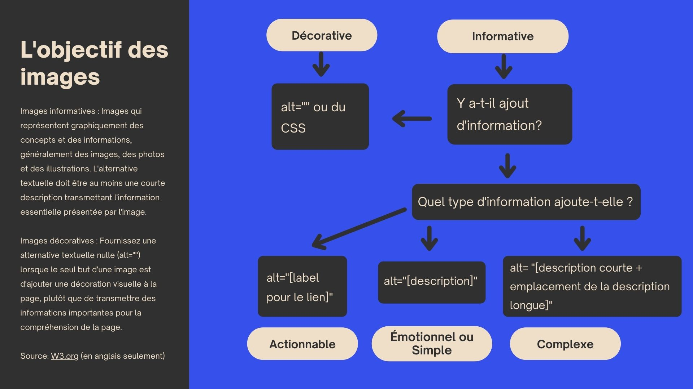

Concevoir des images accessibles

Longue description
L'objectif des images
Informatives : Images qui représentent graphiquement des concepts et des informations, généralement des images, des photos et des illustrations. L'alternative textuelle doit être au moins une courte description transmettant l'information essentielle présentée par l'image.
Images décoratives : Fournissez une alternative textuelle nulle (alt="") lorsque le seul but d'une image est d'ajouter une décoration visuelle à la page, plutôt que de transmettre des informations importantes pour la compréhension de la page.
- Si c'est à des fins décoratives, nous utilisons alt="" ou CSS.
- Si c'est à des fins informatives, mais ajoute-t-il de nouvelles informations ?
- Si non, il s'agit d'un élément décoratif. Nous utilisons alt="" ou CSS.
- Si oui, quel type d'information ajoute-t-elle?
- S'il s'agit d'une information actionnable, nous utilisons alt="[label pour le lien]".
- S'il s'agit d'une information émotionnelle ou simple, nous utilisons alt="[description]".
- S'il s'agit d'une information complexe, nous utilisons alt="[description courte + emplacement de la description longue]".
Pour plus d'informations, veuillez consulter le site W3.org (en anglais seulement)